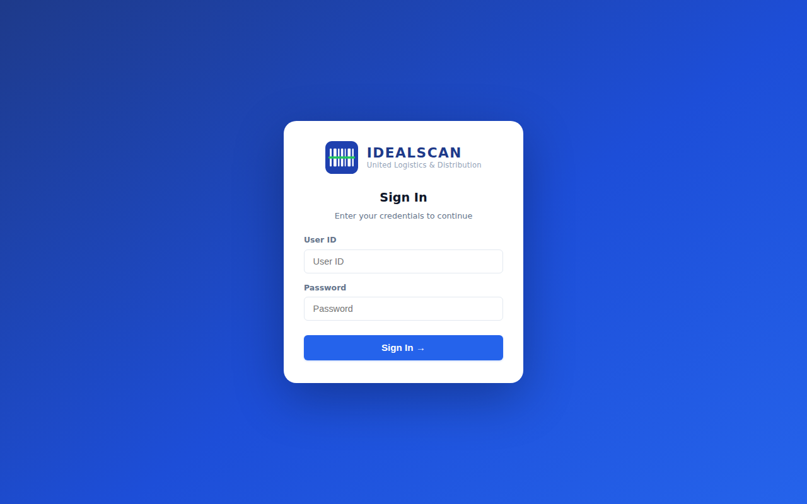
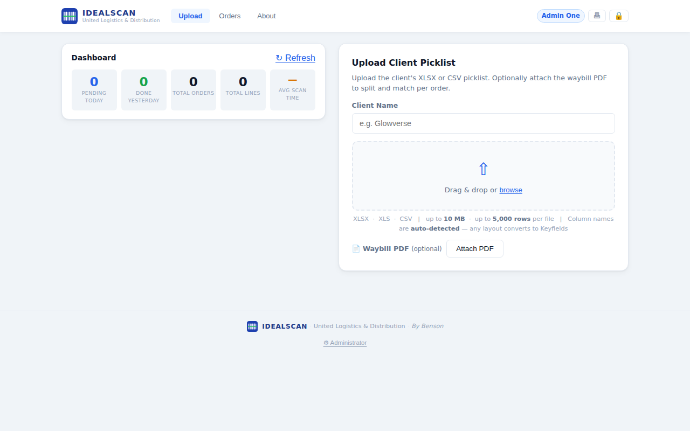
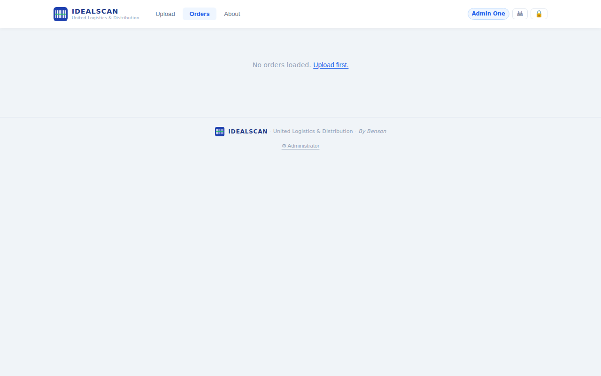
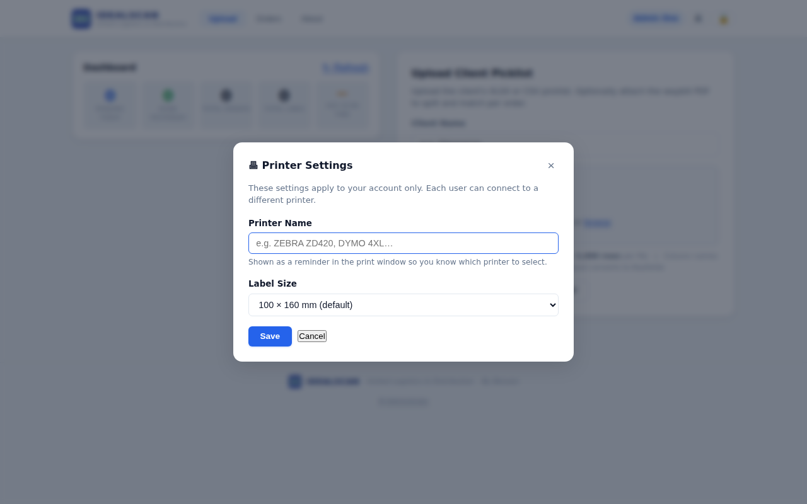
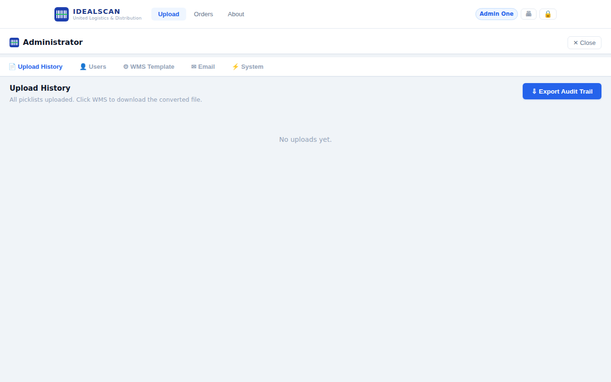
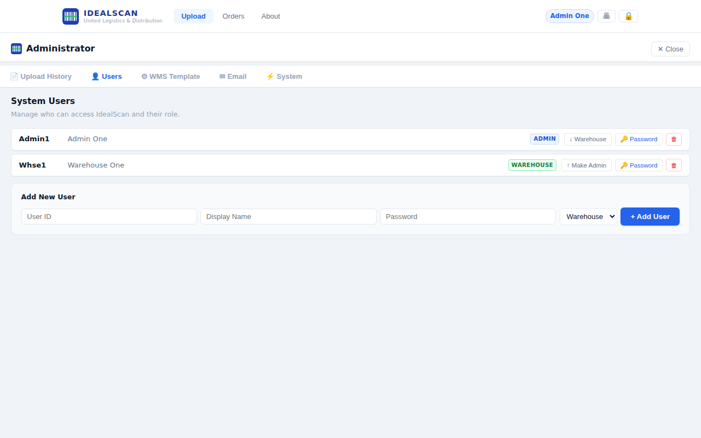
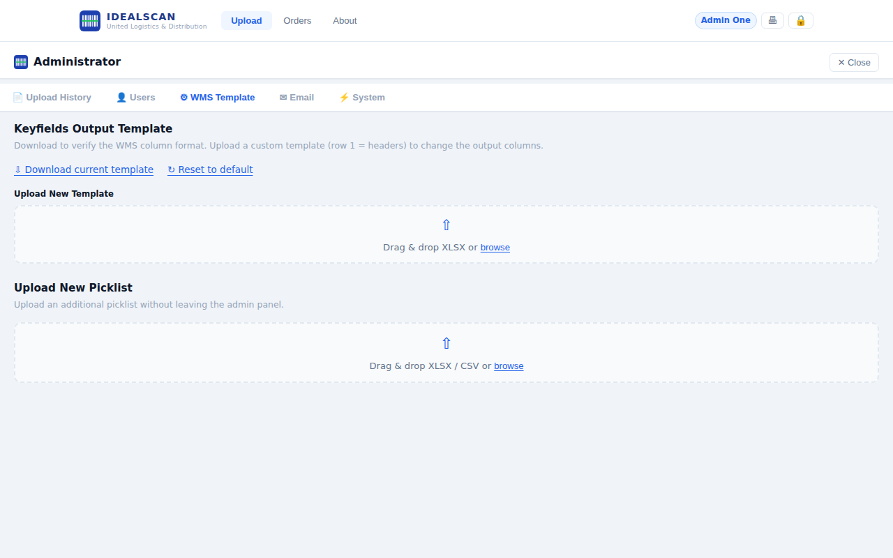
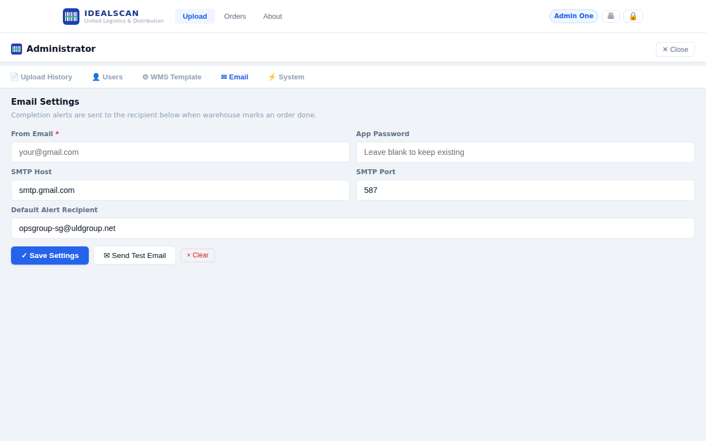
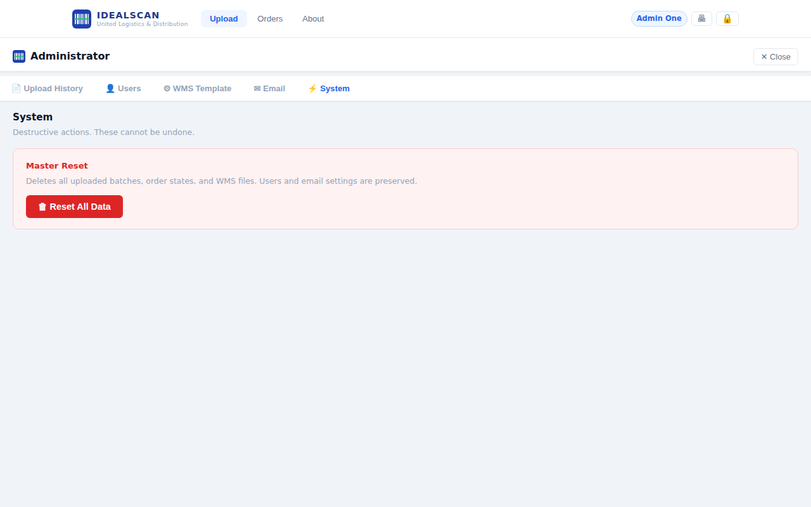

Step-by-step guide for warehouse operators and administrators — from first login to scanning complete.

Open IDEALSCAN in your browser. The Sign In screen appears automatically.
Type your User ID in the first field (e.g. Whse1).
Type your Password in the second field, then click Sign In → or press Enter.
The app loads and lands on the Upload tab. Your name appears in the top-right corner.

Every shift starts here. You upload the client's order picklist so warehouse staff can begin scanning.
Click the Upload tab in the top navigation bar.
Type the Client Name in the text field (e.g. Glowverse). This labels the batch for audit trail purposes.
Drag and drop your XLSX, XLS, or CSV picklist file onto the upload area, or click browse to select it.
(Optional) Click Attach PDF to upload the carrier's multi-page waybill PDF. IDEALSCAN will automatically split and match each page to the correct order by waybill number or order number.
Click Upload. The system parses the file, maps columns automatically, and creates the order batch. You are taken to the Orders tab.
XLSX · XLS · CSV — up to 10 MB and 5,000 rows per file. Column names are detected automatically regardless of layout.
The left panel shows Pending Today, Done Yesterday, Total Orders, Total Lines, and the average scan time across all batches.

After uploading, the Orders tab lists every order in the batch. Each card shows the order number, customer name, carrier, total quantity, and current status.
Pending — not yet started
In Progress — scanning underway
Done — all items scanned & completed
On a Done card: ↓ Waybill downloads the matched waybill PDF page; 🖶 Label prints the IDEALSCAN barcode label (only shown when no waybill PDF was matched).
Tap any order card to open the Scan Overlay for that order.
Use the search bar at the top to filter by order number or customer name.
Completed orders move to the bottom of the list automatically. Pending orders stay at the top.
The Scan Overlay is the core workflow screen. It opens when you tap an order card and guides the operator through verifying each item in the order.
Tap an order card on the Orders tab. The overlay slides in, showing order details and a barcode scan field at the top.
Scan or type a barcode in the scan input box. Press Enter to register. The matching item line increments its scanned count.
Alternatively, tap the 📷 Camera button to use your device's camera as a barcode scanner.
Each item row shows scanned / required quantity. A green checkmark appears when the item is fully scanned.
When all items are complete, tap ✓ Complete. A confirmation prompt appears.
If a matched waybill PDF exists, a Download Waybill modal appears with a 3-second countdown. Click ↓ Download Waybill to save it, or Skip to close.
The order status changes to Done and you return to the Orders list.
Tap ▮▮ Pause to temporarily lock the overlay without losing scanned counts. Resume by tapping again.
Tap ↻ Clear & restart from zero to reset all scanned counts for this order back to zero.
Carriers often provide a multi-page waybill PDF — one page per order. IDEALSCAN can split this PDF and attach the correct page to each order so warehouse staff can download it after scanning.
On the Upload tab, after choosing your picklist file, click Attach PDF.
Select the carrier's multi-page waybill PDF. IDEALSCAN reads every page, extracts waybill and order numbers, and matches them to orders in your picklist.
After upload, orders with a matched page show a ↓ Waybill button on their card.
Open Administrator → Upload History.
Find the batch card and click 📎 Waybill PDF next to it.
Select the PDF. The system matches pages and shows how many orders were matched.
On a completed order card, click ↓ Waybill to download the matched waybill page immediately.
Alternatively, inside the Scan Overlay, click the ↓ Waybill button in the top-right of the header to download at any time.
When scanning is completed, a Download Waybill modal automatically appears if a matched page exists.

Each user account stores its own printer name and label size. This means Workstation A and Workstation B can have different printers without any conflict.
Click the 🖨 printer icon in the top-right header (next to your name).
Enter your Printer Name — e.g. ZEBRA ZD420 or DYMO 4XL. This is shown as a reminder in the print window so you know which printer to select from the browser dialog.
Select your Label Size from the dropdown:
Click Save. Settings are stored on your account and persist across sessions.
@page dimensions sent to the printer — not just a visual preview. Select it carefully for your label stock.

The Administrator panel gives full control over the system. It is password-protected separately from the regular login.
Click ⚙ Administrator at the bottom of the page (or in the footer).
Enter the Administrator Key (master password) when prompted and press Enter.
The panel opens with five tabs: Upload History · Users · WMS Template · Email · System.
Click × Close in the top-right to return to the main app.
The Upload History tab lists every picklist uploaded, who uploaded it, when, and how many orders it contained. Use the ↓ Export Audit Trail button to download a full XLSX report of all batches and order scan times.

Open Administrator → Users tab.
The user list shows each account's ID, display name, and role (ADMIN or WAREHOUSE).
To add a user: fill in User ID, Display Name, Password, select Warehouse or Admin, then click + Add User.
To change a password: click the 🔑 Password button on any user row and enter the new password.
To promote / demote: click ↑ Make Admin or ↓ Warehouse to toggle the user's role.
To delete a user: click the red 🗑 trash icon. This cannot be undone.
Can upload picklists, scan, view Upload History, and access the Administrator panel.
Can upload picklists and scan orders. Cannot access the Administrator panel.

Every uploaded picklist is converted to a WMS-format XLSX file that matches your warehouse management system's import requirements. The column names in this output file are controlled by the WMS Template.
Click ↓ Download current template to get the active output column layout as an XLSX file.
Edit the file — row 1 must contain the column header names your WMS expects. Do not change the number of columns.
Drag and drop or browse to upload the modified file. IDEALSCAN uses the new headers for all future conversions.
Click ↺ Reset to default at any time to restore the original column layout.

IDEALSCAN can send an automatic email notification every time a warehouse operator marks an order as Done. Configure the SMTP sender here.
Enter the From Email address (e.g. your Gmail or business address).
Enter the App Password. For Gmail, generate a 16-character App Password from Google Account → Security → 2-Step Verification → App Passwords.
Set SMTP Host and SMTP Port. Gmail defaults: smtp.gmail.com / 587.
Enter the Default Alert Recipient — the email address that receives order completion alerts.
Click ✓ Save Settings, then click ✉ Send Test Email to verify the connection.

The System tab contains destructive actions that permanently remove data. Use with caution.
Open Administrator → System tab.
Click Reset All Data to permanently delete all uploaded batches, order scan states, and WMS output files.
Confirm the prompt. The operation is instant and cannot be undone.
| Step | Action | Tab / Location |
|---|---|---|
| 1 | Sign in with User ID + Password | Login screen |
| 2 | Upload client picklist (+ optional waybill PDF) | Upload tab |
| 3 | Select an order and scan items | Orders tab → Scan Overlay |
| 4 | Mark Complete → download waybill (if available) | Scan Overlay |
| 5 | Repeat for all orders in the batch | Orders tab |
Enter — submit / scan barcode
Tab — move to next field
Any barcode scanner keystroke goes directly into the scan input — no need to click it first once the overlay is open.
For system issues, contact your Administrator. For a full overview of what IDEALSCAN does and the business value it delivers, open the About tab in the app or download the IDEALSCAN Overview document.